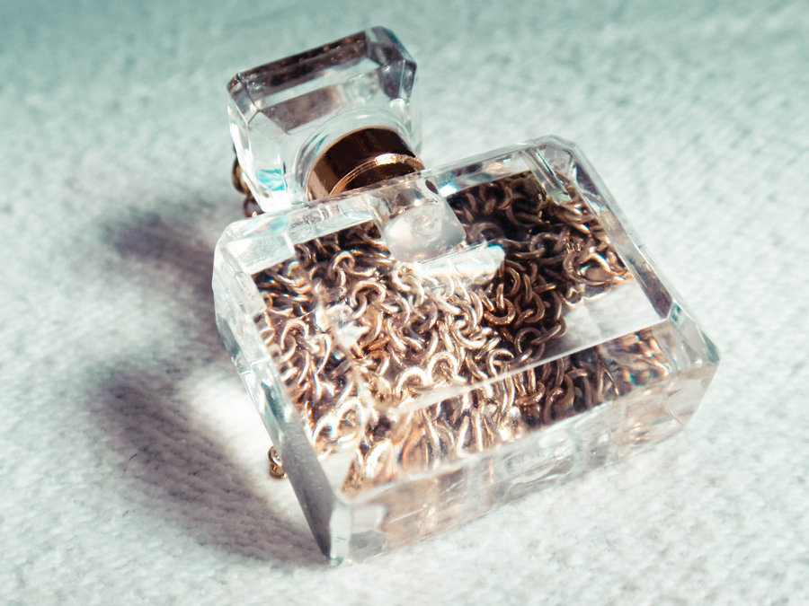
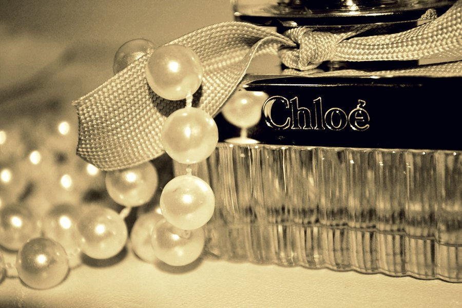

Versiunea cea mai concentrată, pe care eu nu am găsit-o prin magazinele din România, este extrait, care presupune circa 20-30% parfum, iar restul suspensie alcoolică (fără această suspensie, care are rostul de a fixa parfumul, acesta s-ar volatiliza rapid).
Urmează eau de parfum, care conţine un procent de 10-20% parfum; este mai scump şi este probabil cea mai bună alegere, dacă doriţi ca parfumul să fie cât mai aproape de original, iar durata efectului său să fie maximă.
Vine apoi eau de toilette , ce conţine 4-8% parfum, iar ultima versiune este eau fraîche, cu doar 2-5% parfum. Desigur, în procent neprecizat, urmează parfumurile contrafăcute.
Mai există şi cazul excentric, dar de găsit prin magazinele de parfumuri, numit eau de cologne. Dacă găsiţi eau de cologne pentru o firmă serioasă de parfumuri, cel mai probabil aveţi de a face cu un produs contrafăcut, căci apa de colonie este un produs diferit de parfum, este în fapt o apă înmiresmată cu efect rapid trecător, pe care nu are rost să cheltuiţi prea mult.